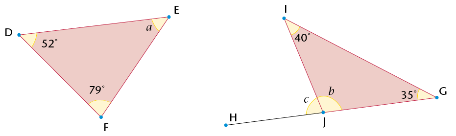
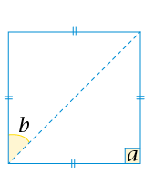
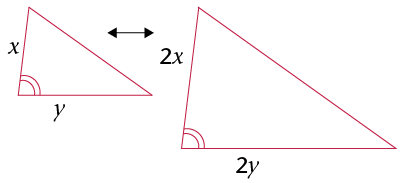

11
MEETKUNDE VAN 2D-FIGURE
Jy het reeds geleer om tussen gelyksydige, gelykbenige en reghoekige driehoeke te
onderskei, asook tussen die volgende vierhoeke: parallelogramme, reghoeke, vierkante,
ruite, trapesiums en vlieërs. Jy het die eienskappe van hierdie figure, soos watter sye gelyk
of ewewydig is, of watter hoeke gelyk is, ondersoek ten einde die figure te klassifiseer. In
hierdie hoofstuk gaan jy jou kennis van die eienskappe van hierdie figure asook algemene
eienskappe van driehoeke en vierhoeke gebruik om verdere inligting oor die figure uit te
werk. Jy gaan ook meer oor kongruensie en gelykvormigheid van driehoeke leer.
11.1 Hersiening: Klassifikasie van driehoeke
- Gebruik ’n gradeboog om die binnehoeke van elk van die volgende driehoeke te
meet. Skryf die groottes van die hoeke op die diagramme.

-
Klassifiseer die driehoeke in vraag 1 volgens hulle
hoekeienskappe. Kies uit die volgende soorte driehoeke:
skerphoekig, stomphoekig en reghoekig.
- \(\triangle\)ABC is 'n
driehoek, want
- \(\triangle\)EDF is 'n
driehoek, want
- \(\triangle\)GHI is 'n
driehoek, want
-
Die gemerkte hoeke in elke driehoek hier onder is gelyk.
Klassifiseer die driehoeke volgens die eienskappe van hulle
hoeke en sye.
- \(\triangle\) .......... is ’n skerphoekige gelykbenige driehoek, want........ en .........
- \(\triangle\) .......... is 'n reghoekige gelykbenige
driehoek, want ......... en ........
- \(\triangle\) .......... is 'n stomphoekige
gelykbenige driehoek, want ........... en ..........

- Sê
vir watter soort driehoek elke bewering waar is. As dit waar is
vir alle driehoeke, skryf "Alle driehoeke".
|
|
|
|
(a)
|
Twee sye van die
driehoek is gelyk.
|
|
|
(b)
|
Een hoek van die
driehoek is stomp.
|
|
|
(c)
|
Twee hoeke van die
driehoek is gelyk.
|
|
|
(d)
|
Al drie hoeke van die
driehoek is gelyk aan 60\(^\circ\).
|
|
|
(e)
|
Die grootte van ’n buitehoek is gelyk aan die som
van die teenoorstaande binnehoeke.
|
|
|
(f)
|
Die langste sy van die driehoek is teenoor die
grootste hoek.
|
|
|
(g)
|
Die som van die twee korter sye van die driehoek is
groter as die lengte van die langste sy.
|
|
|
(h)
|
Die kwadraat van die lengte van een sy is gelyk aan
die som van die kwadrate van die ander sye.
|
|
|
(i)
|
Die kwadraat van die lengte van een sy is groter as die
som van die kwadrate van die ander sye.
|
|
|
(j)
|
Die som van die binnehoeke van die driehoek is
180\(^\circ\).
|
|
11.2 Bepaling van onbekende hoeke in driehoeke
Wanneer jy in meetkunde die
grootte van 'n onbekende hoek of lengte van 'n figuur moet
bepaal, moet jy 'n rede gee vir elke bewering wat jy
maak.Voltooi die voorbeeld hier onder:
In \(\triangle\)ABC, is AC = BC en \(\hat{\text{C}}=40^\circ\) Bepaal die grootte van
\(\hat{\text{B}}\) (word in die diagram as \(x\) gewys).
| Bewering |
Rede |
| \(\text{AC} = \text{BC} \) |
Gegee |
| \(\therefore\hat{\text{A}} = \hat{\text{B}}\) |
|
| \(180^\circ = 40^\circ + x + x \) |
Som \(\angle\)e
\(\triangle\) |
| \(180^\circ = 40^\circ + 2x \) |
|
\(\therefore x = \) |
|
BEPALING VAN ONBEKENDE
LENGTES EN HOEKE
- Bereken die groottes van
die onbekende hoeke.

- Bepaal die groottes van
die onbekende hoeke en die lengte van MO.

- Bereken die groottes van
y en x.

11.3 Vierhoeke
EIENSKAPPE VAN
VIERHOEKE
- Benoem die
volgende vierhoeke. Merk in elke figuur die hoeke en sye wat
gelyk is. Gebruik waar nodig jou liniaal en gradeboog om
hoekgroottes en lengtes te meet.
- Voltooi die volgende tabel:
|
|
|
|
|
|
|
|
|
|
|
Ten minste een paar
teenoorstaande
hoeke is gelyk.
|
ja
|
ja
|
ja
|
ja
|
ja
|
nee
|
|
Albei pare
teenoorstaande
hoeke is gelyk.
|
|
|
|
|
|
|
|
Ten minste een paar
aangrensende hoeke is
gelyk.
|
|
|
|
|
|
|
|
Al vier hoeke is gelyk.
|
|
|
|
|
|
|
|
Enige twee
teenoorstaande sye is
gelyk.
|
|
|
|
|
|
|
|
Twee aangrensende sye
is gelyk, en die
ander twee aangrensende sye is ook
gelyk.
|
|
|
|
|
|
|
|
Al vier sye is gelyk.
|
|
|
|
|
|
|
|
Ten minste een paar
teenoorstaande
sye is ewewydig.
|
|
|
|
|
|
|
|
Enige twee
teenoorstaande sye is
ewewydig.
|
|
|
|
|
|
|
|
Die twee hoeklyne is loodreg.
|
|
|
|
|
|
|
|
Ten minste een hoeklyn
halveer die
ander een.
|
|
|
|
|
|
|
|
Die twee hoeklyne halveer mekaar.
|
|
|
|
|
|
|
|
Die twee hoeklyne is gelyk.
|
|
|
|
|
|
|
|
Ten minste een hoeklyn
halveer 'n
paar teenoorstaande hoeke.
|
|
|
|
|
|
|
|
Albei hoeklyne halveer
'n paar
teenoorstaande hoeke.
|
|
|
|
|
|
|
|
Die som van die
binnehoeke is 360\(^\circ\).
|
|
|
|
|
|
|
- Kyk na die eienskappe
van 'n vierkant en 'n ruit.
- Is al die eienskappe van 'n
vierkant ook die eienskappe van 'n ruit? Verduidelik.
- Is al die eienskappe van 'n ruit
ook die eienskappe van 'n vierkant? Verduidelik
- Watter bewering is waar?
'n Vierkant is 'n
spesiale soort ruit.
'n Ruit is 'n spesiale
soort vierkant.
- Kyk na die eienskappe van reghoeke en vierkante.
- Is al die eienskappe van 'n
vierkant ook die eienskappe van 'n reghoek? Verduidelik
- Is al die eienskappe van ’n reghoek ook die eienskappe van ’n vierkant? Verduidelik.
- Watter bewering is waar?
'n Vierkant is ’n spesiale soort reghoek.
’n Reghoek is ’n spesiale soort vierkant.
- Kyk na die eienskappe van parallelogramme en reghoeke.
- Is al die eienskappe van ’n parallelogram ook dié van ’n reghoek? Verduidelik.
- Is al die eienskappe van ’n reghoek ook dié van ’n parallelogram? Verduidelik.
- Watter bewering is waar?
’n Reghoek is ’n spesiale parallelogram.
’n Parallelogram is ’n spesiale reghoek.
- Kyk na die eienskappe van ’n ruit en ’n parallelogram. Is ’n ruit ’n spesiale soort parallelogram? Verduidelik.
- Vergelyk die eienskappe van ’n vlieër en ’n parallelogram. Waarom is ’n vlieër nie ’n
spesiale soort parallelogram nie?
- Vergelyk die eienskappe van ’n trapesium en ’n parallelogram. Waarom is ’n trapesium nie ’n spesiale soort parallelogram nie?
ONBEKENDE SYE EN HOEKE IN VIERHOEKE
- Bepaal die groottes van hoeke a tot
e in die vierhoeke. Gee redes vir jou antwoorde.

- Bereken die omtrek van die
vierhoeke hier regs. Gee jou antwoorde tot twee desimale plekke.

11.4 Kongruente driehoeke
DEFINISIE EN
NOTASIE VAN KONGRUENTE DRIEHOEKE
As twee driehoeke kongruent is,
het hulle presies dieselfde grootte en vorm. As jy een van die
driehoeke uitsny en dit bo-op die ander neersit, sal hulle
presies op mekaar pas.
As twee driehoeke
kongruent is, is elke sy in die een driehoek gelyk aan elke
ooreenstemmende sy in die ander driehoek. Elke hoek in die
een driehoek is ook gelyk aan elke ooreenstemmende hoek in
die ander driehoek.

In die driehoeke hier bo kan jy sien dat
\(\triangle\)ABC \(\equiv\)
\(\triangle\)XYZ.
Kongruensiesimbool
\(\equiv\) beteken "is kongruent aan"
Die volgorde waarin jy die letters skryf
as jy sê dat twee driehoeke
kongruent is, is baie belangrik. Die letters van
die ooreenstemmende hoekpunte tussen die twee
driehoeke moet in dieselfde posisie in die notasie
verskyn. Die notasie vir die driehoeke hier bo moet byvoorbeeld
\(\triangle\)ABC \(\equiv\) \(\triangle\)XYZ wees, want dit dui aan
dat \( \hat{\text{A}} = \hat{\text{X}}, \hat{\text{B}} = \hat{\text{Y}}, \hat{\text{C}} = \hat{\text{Z}}, AB = XY, BC = YZ \text{ en } AC = XZ \).
Dit is verkeerd om \(\triangle\)ABC
\(\equiv\) \(\triangle\)ZYX. te skryf. Alhoewel die letters na dieselfde
driehoeke verwys, dui hierdie notasie aan dat \( \hat{\text{A}} = \hat{\text{Z}}, \hat{\text{C}} = \hat{\text{X}}, AB = ZY \text{ en } BC = YX \), en
hierdiebewerings is nie waar nie.
Skryf die gelyke hoeke en sye
volgens die volgendedriehoeke se notasies neer:
- \(\triangle\)KLM \(\equiv\)
\(\triangle\)PQR:
- \(\triangle\)FGH \(\equiv\)
\(\triangle\)CST:
MINIMUM VOORWAARDES VIR KONGRUENTE DRIEHOEKE
In die vorige hoofstuk het jy
die minimum voorwaardes ondersoek waaraan twee (of meer)
driehoeke moet voldoen sodat hulle as kongruent verklaar kan
word.
Die voorwaardes vir kongruensie:
- SSS (alle ooreenstemmende sye is gelyk)
- SHS (twee ooreenstemmende sye en die ingeslote hoek is gelyk)
- HHS (twee ooreenstemmende hoeke en enige
ooreenstemmende sy is gelyk)
- 90°SS (albei driehoeke het ’n 90°-hoek en het
skuinssye gelyk en een ander sy gelyk).
Besluit of die driehoeke in
elke paar hier onder kongruent is of nie. Skryf die notasie
korrek vir elke kongruente paar en gee 'n rede vir
kongruensie.
-
-
-
-
-
-
BEWYS DAT DRIEHOEKE KONGRUENT IS
Jy kan dit wat jy oor die
minimum voorwaardes vir kongruensie weet gebruik om te bewys
dat twee driehoeke kongruent is.
Wanneer
jy 'n bewys vir kongruensie gee, onthou die
volgende:
- Elke bewering wat jy maak moet 'n rede
hê.
- Jy moet drie bewerings gee om te bewys dat enige twee
driehoeke kongruent is.
- ee die rede vir kongruensie.
Voorbeeld:
n die skets aan die regterkant is AB
\(||\) EC en AD = DC.
ewys dat die driehoeke kongruent is.
Oplossing:
|
|
|
|
In \(\triangle\)ABD en
\(\triangle\)CED:
1) AD = DC
2) \(\text{A}\hat{\text{D}}\text{B} = \text{C}\hat{\text{D}}\text{E}\)
3) \(\text{B}\hat{\text{A}}\text{D} = \text{E}\hat{\text{C}}\text{D}\)
\(\therefore\)
\(\triangle\)ABD \(\equiv\)
\(\triangle\)CED
|
Gegee
Regoorst. \(\angle\)e
Verw. \(\angle\)s
(AB\(||\) EC)
HHS
|
- Bewys dat \(\triangle\)ACE
\(\equiv\)
\(\triangle\)BDE.
- Bewys dat \(\triangle\)WXZ
\(\equiv\)
\(\triangle\)YXZ.
- Bewys dat QR = SP. (Wenk: Bewys eers dat die driehoeke kongruent
is.)
- Bewys dat die driehoeke
hier onder kongruent is. Bepaal dan die grootte van \(\text{Q}\hat{\text{M}}\text{P}\).

11.5 Gelykvormige driehoeke
EIENSKAPPE VAN GELYKVORMIGE DRIEHOEKE
\(\triangle\)BAC en \(\triangle\)DEF is gelykvormig. Gelykvormige figure het dieselfde vorm, maar hulle groottes kan verskillend wees.

-
- Gebruik 'n gradeboog om die hoeke in elke driehoek hier bo te meet.
Voltooi dan die tabel hier onder.
|
|
|
|
|
\(\hat{\text{B}} =\quad\)
|
\(\hat{\text{D}} =\)
|
|
|
\(\hat{\text{A}} =\)
|
\(\hat{\text{E}} =\)
|
|
|
\(\hat{\text{C}} =\)
|
\(\hat{\text{F}} =\quad\)
|
|
- Wat kan jy oor die groottes van
die hoeke in gelykvormige driehoeke sê?
-
-
Gebruik 'n liniaal om die
lengtes van die sye in elke driehoek in vraag 1 te meet.
Voltooi dan die tabel hier onder
|
|
|
|
|
BA =
|
DE =
|
BA : DE = \(\quad\) = \(1 : 1\frac{1}{3}\)
|
|
BC =
|
DF =
|
BC : DF = \(\quad\) = \(\quad\)
|
|
CA =
|
FE =
|
CA : FE = \(\quad\) = \(\quad\)
|
- Wat kan jy oor die verband tussen die sye in gelykvormige driehoeke sê?
Onthou:
Jy lees 'n verhouding
soos byvoorbeeld 2 : 1 as "twee tot een".
-
Die volgende
notasie wys dat die driehoeke gelykvormig is: \(\triangle\)BAC
\(|||\) \(\triangle\)DEF. Waarom dink jy skryf ons die eerste driehoek
as \(\triangle\)BAC en nie as \(\triangle\)ABC nie?
Die eienskappe van gelykvormige driehoeke:
- Die ooreenstemmende hoeke is gelyk.
- Die ooreenstemmende sye is in dieselfde
verhouding tot mekaar.
Notasie vir gelykvormige driehoeke:
As \(\triangle\)XYZ en \(\triangle\)PQR gelykvormig is,
skryf ons: \(\triangle\)XYZ
\(|||\) \(\triangle\)PQR.
Soos vir die notasie van kongruente figure, dui die volgorde van die letters in die
notasie van gelykvormige driehoeke aan watter hoeke en sye gelyk is.
Vir \(\triangle\)XYZ
\(|||\) \(\triangle\)PQR:
Hoeke: \(\hat{\text{X}} = \hat{\text{P}}\) en \(\hat{\text{Y}} = \hat{\text{Q}}\) en
\(\hat{\text{Z}} = \hat{\text{R}}\)
Syes: \(\text{X}\)\(\text{Y}\):\(\text{P}\)\(\text{Q}=\text{X}\)\(\text{Z}\):
\(\text{P}\)\(\text{R}=\text{Y}\)\(\text{Z}\):\(\text{Q}\)\(\text{R}\)
As die driehoeke se
hoekpunte in 'n ander volgorde geskryf word, sal die
bewerings hier bo onwaar wees
As jy bewys dat driehoeke
gelykvormig is, moet jy óf bewys dat die
ooreenstemmende hoeke gelyk is óf dat die sye in
dieselfde verhouding tot mekaar is.
WERK MET EIENSKAPPE VAN GELYKVORMIGE DRIEHOEKE
- Besluit of die pare driehoeke gelykvormig is.
-
-
-
-
- Doen die volgende taak in jou oefeningboek.
Konstrueer die driehoeke in (a) tot (d) met
'n liniaal en gradeboog. Gebruik jou kennis van gelykvormigheid
om die tweede driehoek in elke vraag te teken. Dui die groottes
van die ooreenstemmende sye en hoeke op die tweede driehoek
aan.
- In \(\triangle\)EFG, \(\hat{\text{G}}\)=
75\(^\circ\), EG = 4 cm en GF = 5
cm. \(\triangle\)ABC is ’n vergroting van \(\triangle\)EFG, met sy sye drie
keer langer.
- In \(\triangle\)MNO,
\(\hat{\text{M}}\)= 45\(^\circ\), \(\hat{\text{N}}\)= 30\(^\circ\) en MN = 5 cm.
\(\triangle\)PQR is gelykvormig aan \(\triangle\)MNO. Die sye van
\(\triangle\)MNO en die sye van \(\triangle\)PQR is in die verhouding 1 : 3.
- \(\triangle\)RST is 'n gelykbenige driehoek.
\(\hat{\text{R}}\)= 40\(^\circ\), RS is 10 cm en RS =
RT. \(\triangle\)VWX is gelykvormig aan \(\triangle\)RST. Die sye van
\(\triangle\)RST en die sye van \(\triangle\)VWX is in die verhouding
1:\(\frac{1}{2}\).
- \(\triangle\)KLM is reghoekig by
\(\hat{\text{L}}\), LM is 7 cm en die skuinssy is 12 cm.
\(\triangle\)XYZ is gelykvormig aan \(\triangle\)KLM en sy sye se lengtes is ’n
derde van \(\triangle\)KLM s'n.
ONDERSOEK: MINIMUM VOORWAARDES VIR
GELYKVORMIGHEID
|
|
Watter van die
volgende is minimum voorwaardes vir
gelykvormige driehoeke?
- Twee hoeke in een
driehoek is gelyk aan twee hoeke in 'n
ander driehoek.
- Twee sye van een
driehoek is in dieselfde verhouding tot
mekaar as twee sye in 'n ander
driehoek.

- Twee sye van een
driehoek is in dieselfde verhouding tot
mekaar as twee sye van 'n ander driehoek,
en die ingeslote hoek is gelyk aan die hoek
tussen die ooreenstemmende sye.
- Twee sye van een
driehoek is in dieselfde verhouding as twee
sye van 'n ander driehoek, en een hoek
wat nie tussen die
twee sye is nie, is
gelyk aan die ooreenstemmende hoek in
die ander driehoek
|
LOS PROBLEME MET GELYKVORMIGE DRIEHOEKE OP
Ewewydige lyne sny mekaar nooit nie. Twee lyne is ewewydig
aan mekaar as die afstand tussen hulle dieselfde langs die hele
lengte van die lyne is.
- Lynstuk QR is ewewydig aan lynstuk ST.
Voltooi die volgende bewys
dat \(\triangle\)QRU \(|||\) \(\triangle\)TSU:
|
|
|
|
\(\text{R}\)\(\hat{\text{Q}}\)\(\text{T}\) = \(\text{Q}\)\(\hat{\text{T}}\)\(\text{S}\)
\(\text{Q}\)\(\hat{\text{R}}\)\(\text{S}\)=
=
\(\therefore\)\(\triangle\)QRU\(|||\) \(\triangle\)TSU
|
Verw. \(\angle\)s
Regoorst. \(\angle\)e
Gelyke \(\angle\)e (of
HHH)
|
- Die volgende snydende
lynstukke vorm driehoekpare tussen ewewydige lyne.

- Is die driehoeke in elke paar gelykvormig? Verduidelik.
- Skryf pare gelykvormige driehoeke neer.
- Is driehoeke soos dié altyd
gelykvormig? Verduidelik hoe jy seker kan wees sonder om
elke moontlike driehoekpaar te meet.
- Hier regs vorm die
snylyne pare van driehoeke tussen lynstukke wat nie ewewydig is nie. Is
hierdie pare van driehoeke gelykvormig? Verduidelik waarom of waarom nie.
- Kyk na die driehoeke hier onder.
DE\(||\) BC. Bewys dat \(\triangle\)ABC\(|||\) \(\triangle\)ADE.
5. In die diagram hier regs is ST ’n
telefoonpaal en UV is ’n vertikale stok. Die stok is 1 m hoog en dit gooi ’n
skaduwee van 1,7 m (VW). Die telefoonpaal gooi ’n skaduwee van 5,1 m (TW).
Gebruik gelykvormige driehoeke om die hoogte van die telefoonpaal te bereken.
6. Hoeveel gelykvormige
driehoeke is daar in die diagram? Verduidelik jou antwoord.

11.6 Verrykingsvrae
- \(\triangle\)ABC ohier regs is gelyksydig. D is die
middelpunt van AB, E is die middelpunt van BC en F is die middelpunt van AC.
- Bewys dat \(\triangle\)BDE 'n gelyksydige driehoek is.
- Bepaal al die kongruente
driehoeke. Gee 'n bewys vir elkeen.
- Noem soveel gelykvormige driehoeke
as wat jy kan. Verduidelik hoe jy weet hulle is gelykvormig.
- Wat is die verhouding van die ooreenstemmende sye van die
gelykvormige driehoeke tot mekaar?
- Bewys dat DE ewewydig is aan AC.
- Is DF ewewydig aan BC? Is EF ewewydig aan BA? Verduidelik.
- Kyk na die
gelykvormige driehoeke hier onder wat geteken is deur
konsentriese sirkels te gebruik. Verduidelik waarom die
driehoeke in elke diagram gelykvormig is.
-